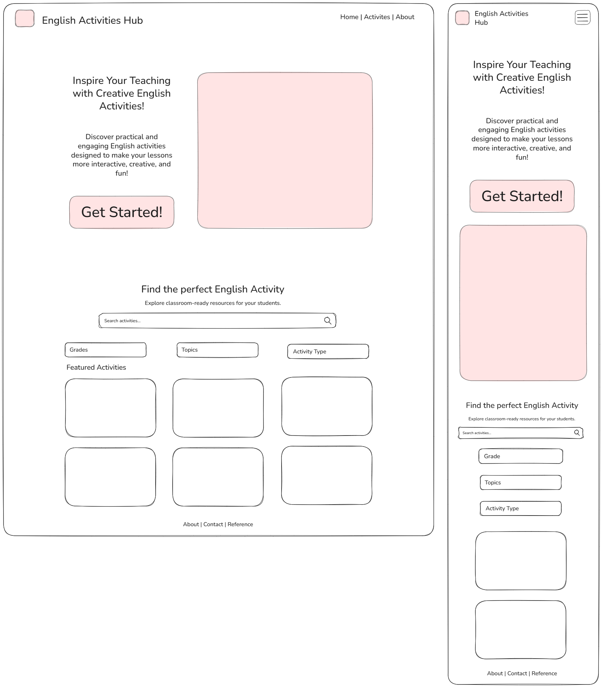

1. Site Name
Back to top ↑English Activity Hub
This name identifies a central place where English teachers can find classroom activities. “English” describes the subject, “Activity” identifies the main resource, and “Hub” communicates that the resources are organized in one convenient location. The site name will appear as a text wordmark in the header. A purchased domain is not planned for this course project.
2. Purpose
Back to top ↑English Activity Hub will help teachers find practical, low-preparation classroom activities for beginner English learners. It will provide original activities with learning objectives, topics, levels, estimated durations, skills, materials, and step-by-step instructions. Teachers will be able to search and filter the catalog, read activity details, save favorites in their browser, and use a dictionary tool to look up English vocabulary.
Target Audience
English teachers working with beginner learners, especially teachers who need short, adaptable activities and have limited lesson-planning time. The interface and activity instructions will be written in English.
Planned Pages
- Home — index.html: introduction, a Browse Activities link, topic categories, featured activities, and a short explanation of how the site works.
- Activities — activities.html: searchable catalog with topic, level, and duration filters; activity details; and controls for saving favorites.
- Teacher Toolkit — toolkit.html: saved activities and a dictionary search tool.
Content and dynamic features
The initial content target is 12 original activities across Food, Daily Routines, Animals, and Family. Activities will be labeled Pre-A1 or A1 within the beginner range. This quantity is a planning decision and may be adjusted to the final assignment rubric.
- A local JSON file will store activity data, loaded with fetch and async/await.
- JavaScript will display cards, combine filters, and show a clear message when no activity matches.
- localStorage will store favorite activity IDs on the same browser and device without requiring an account.
- A remote dictionary API is planned for vocabulary lookups, with loading, missing-word, and connection-error messages.
3. Scenarios
Back to top ↑- Which beginner speaking activity about food can I use in a ten-minute classroom session?
- What materials and instructions do I need to teach daily routines with little preparation?
- How can I save an activity and find it again when I plan my next lesson?
- Where can I look up the meaning of an English word before using it in class?
The catalog filters address the first question, the activity details answer the second, and the Teacher Toolkit supports the last two.
Color Scheme
Back to top ↑The following palette is applied throughout this site plan and will be used on the website.
Rosewood
#BA324F
Header and footer backgrounds.
Graphite
#2F2F2F
Body text, and structural borders on light surfaces.
Goden Sand
#D5C67A
Accent color for links and highlights
Seashell
#F2E4DF
Cards and section backgrounds to provide a soft contrast with the primary Rosewood color.
5. Typography
Back to top ↑Selected font: Rubik. Rubik is a sans-serif font with slightly rounded corners that gives English Activity Hub a friendly, modern appearance. It will be used throughout the website to create a consistent visual identity.
- Headings: Rubik Bold (700) to clearly identify pages and sections.
- Body text: Rubik Regular (400) for descriptions and activity instructions.
- Navigation and buttons: Rubik Medium (500) to emphasize links and actions.
Heading sample: Find your next classroom activity
Body sample: Explore practical activities for beginner English learners. Choose a topic, check the duration, and read the instructions before class.
6. Wireframes
Back to top ↑English Activity Hub
The home page will have two student-created black-and-white sketches: one for a small mobile viewport and one for a large desktop or tablet viewport.
